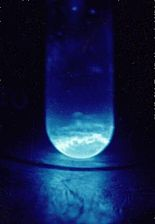

|  |
|
Main features: Einsteinium is a solid, silver, highly radioactive, artificially produced metal. Studies of Es-253 samples demonstrate that this element exhibits chemical properties typical of a heavy trivalent metal. In the periodic table is located the right of the californium and the left of the fermium with atomic numbers 98 and 100 respectively and below the holmium lanthanide, element with which it shares many characteristics in common. Its density is 8.84 g / cm³, lower than that of californium (15.1 g / cm³) and almost equal to holmium (8.79 g / cm³). Although it has a much larger atomic mass than its similar one, holmium, the einsteinium's melting point is low, only 860 ° C, lower than that of californium (900 ° C), fermium (1527 ° C) and of holmium (1461 ° C) .1 2 Unlike the milder actinides such as californium, berkelium, curium, and americium that crystallized into double hexagonal structures when under ambient conditions, it is believed that the einstenium crystallizes in a cube of faces centered (acronym in English: fcc) with the spatial group Fm \ bar {3} m with each crystal having area equal to 576 pm. However, there are reports that by heating einsteinium crystals at 300 ° C hexagonal crystals were formed as in most other actinides which, after returning to room temperature, continued with the format. However the radioactivity of the einsteinium is so intense that it usually destroys the crystal quickly. Each gram of 253Es produces 1 000 watts of energy per gram releasing an intense visible light. This intense radioactivity was responsible for the identification of its first samples. This feature should contribute to the low density and melting point of this element. In addition, due to the difficulty in obtaining data from their characteristics obtained from the observation of small samples using electron microscopes, these small quantities used may end up warming up faster and therefore generate data at times that are erroneous. The metal is divalent and has a remarkably high volatility. In order to reduce damage by auto-radiation, most of the einsteinium samples and their compounds receive the measurements soon after the heat treatment and some are even studied on atmospheres of reducing gases like H2O + HCl to study EsOCl.67 8 In addition to its self-destruction of crystals and chemical structures of einsteinium and its compounds other major intrinsic difficulties in the study of einsteinium is in its availability, being produced only 1 or 2 times per year in amounts of subgrams and the contamination of samples arising from the rapid conversion of einsteinium to berkelium and then to californium. So most of the data on einsteinium are deduced or not very accurate. Intense light produced by 253E samples in aqueous solution. Chemistry Like all actinides, einsteinium is quite reactive. Its trivalent oxidation state is more stable in aqueous solution and solids where it assumes a pale pink color. The existence of divalent einsteinium is firmly established, especially in the solid phase; the second oxidation state as such is not observed in many other actinides, including protactinium, uranium, neptunium, plutonium, curium, and berkelium. Einsteinium compounds of this type can be obtained, for example, by reduction of einsteinium (III) with samarium (II) chloride. The +4 oxidation state was postulated from steam studies and is still uncertain. |